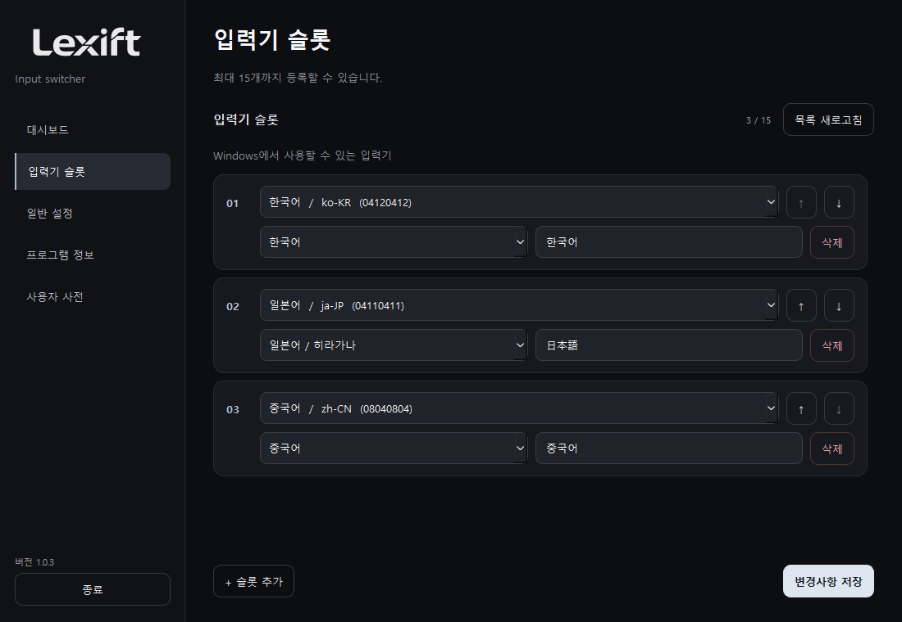
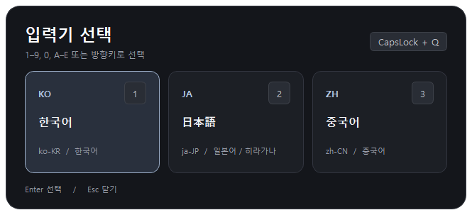
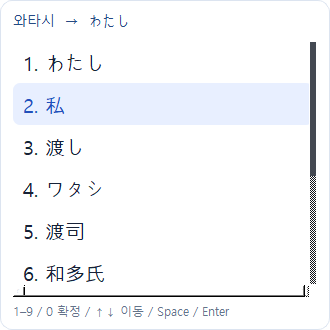
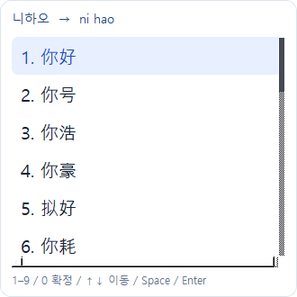
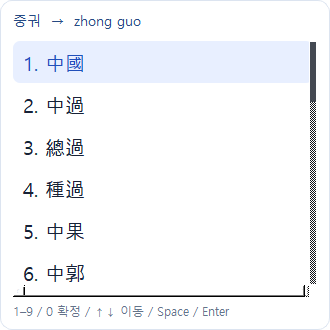
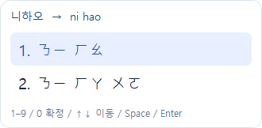
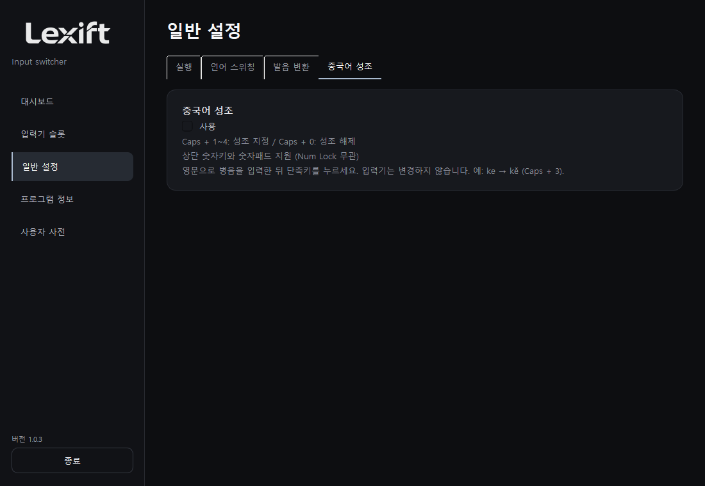
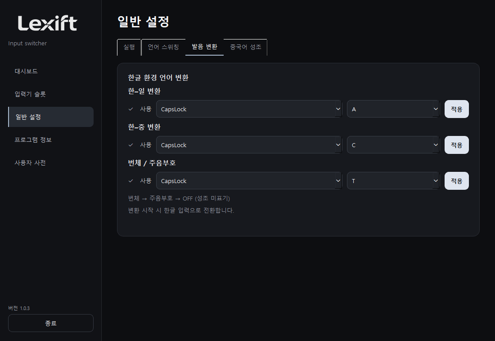
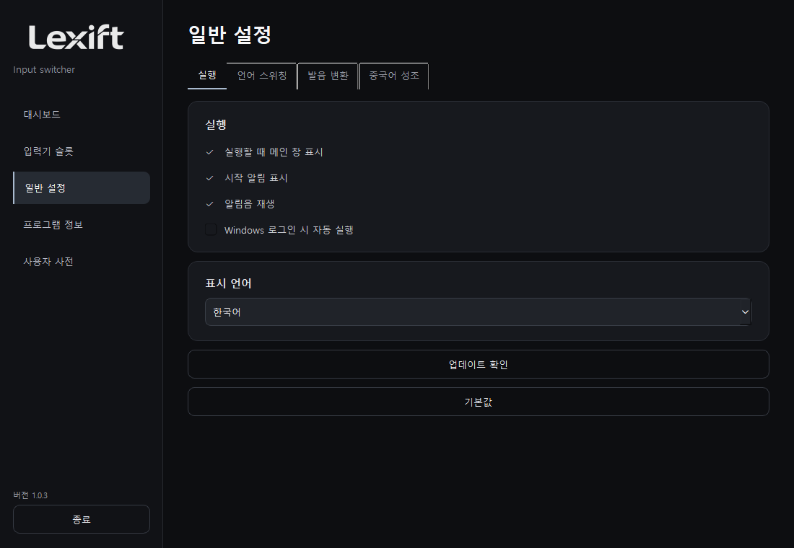
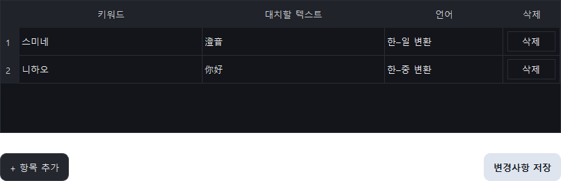

사용설명서
개요
입력기 전환과 한글 발음 변환.
Windows 10/11, 64비트.
다운로드 1.0.3 ↗설치 및 실행
ZIP 압축 해제 후 Lexift.exe 실행. 사용할 입력기는 Windows에 설치한 뒤 ‘입력기 슬롯’에 등록합니다.

입력기 전환
방향키와 Enter, 또는 번호로 선택합니다.

일본어 입력
일본어 발음을 한글로 입력합니다. 와타시 → 私. 다시 누르면 꺼집니다.

↑↓ 이동 / Space 또는 Enter 확정 / 1~9, 0 번호 선택 / Esc 닫기.
변환을 켜면 한글 입력으로 전환됩니다.
중국어 간체
중국어 발음을 한글로 입력합니다. 니하오 → 你好. 다시 누르면 꺼집니다.

번체 및 주음부호
번체 → 주음부호 → 끄기 순으로 전환합니다. 중궈 → 中國 / 니하오 → ㄋㄧ ㄏㄠ. 주음은 성조 없이 표시합니다.


병음 성조
설정에서 ‘중국어 성조’를 켠 뒤 병음을 영문으로 입력합니다. ke 입력 후 Caps + 3 → kě.
1~4: 성조 지정 / 0: 성조 해제. 숫자패드도 지원합니다(Num Lock 무관). 후보창에서는 번호 선택이 우선합니다.

환경 설정
체크박스로 기능을 켜고 끕니다. 단축키 변경 후 ‘적용’을 누릅니다. 중복 단축키는 저장되지 않습니다.


‘기본값’을 누르면 모든 설정과 사용자 사전이 초기화됩니다.
사용자 사전
후보에 없는 단어를 등록합니다. 스미네 / 澄音 / 한–일처럼 입력하고 저장합니다. 삭제는 각 행 오른쪽 버튼.

문제 해결
단축키가 반응하지 않음
트레이에서 Lexift 실행 여부를 확인합니다. 설정에서 해당 기능을 체크하고 ‘적용’을 누릅니다. 다른 프로그램과 키가 겹치면 단축키를 변경합니다.
전환할 언어가 목록에 없음
Windows 설정에서 해당 언어와 입력기를 설치한 뒤 Lexift의 ‘입력기 슬롯’에 등록합니다.
한글을 입력해도 후보가 안 뜸
변환 기능을 켠 뒤 한국어 입력기의 한글 상태에서 입력합니다. 일본어 변환에는 Microsoft 일본어 IME가 필요합니다. 입력기를 새로 설치했다면 Lexift를 다시 실행합니다.
원하는 단어가 후보에 없음
이름이나 고유명사는 사용자 사전에 등록합니다. 일본어 장음은 대시(-)로 입력할 수 있습니다. 예: 코-죠- → こうじょう.
Caps + Q에서 방향키나 Esc가 안 됨
Lexift를 종료하고 최신 ZIP을 새 폴더에 모두 풀어 실행합니다. 실행 파일만 복사하지 말고 module 폴더도 함께 사용합니다.
병음에 성조가 붙지 않음
설정에서 ‘중국어 성조’를 켜고 영문 입력 상태에서 ke를 입력한 뒤 Caps + 3을 누릅니다. 후보창이 열려 있으면 먼저 닫고, 커서는 성조를 붙일 음절 바로 뒤에 둡니다.
특정 프로그램에서만 입력되지 않음
입력칸을 다시 클릭하고 메모장에서도 확인합니다. 관리자 권한으로 실행한 프로그램은 일반 실행으로 다시 열어 확인합니다. 비밀번호 등 보안 입력란은 지원하지 않습니다.
오류 제보: 사용한 프로그램, Windows 버전, 재현 순서.
GitHub Issues ↗